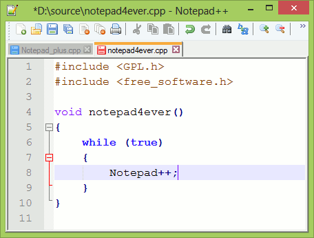
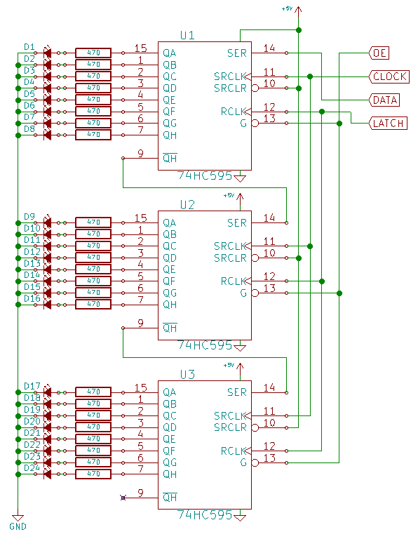
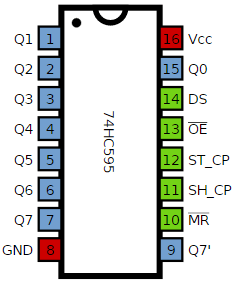

2015-06-09 - Nº 6
Editorial
Mais uma Newsletter, desta vez a 6ª. Esta apresenta uma novidade que irá quebrar as barreiras linguísticas. Foi acrescentada a tradução do Google para permitir que os conteúdos em Português possam ser lidos noutras línguas.
Esta Newsletter encontra-se mais uma vez disponível no sistema documenta do altLab. Todas as Newsletters encontram-se indexadas no link.
Esta Newsletter tem os seguintes tópicos:
- Novidades da Semana
- Ciência e Tecnologia
- Cursos MOOC
- Modelos 3D
- Open Source
- Circuitos
- Artigo do Maker
- Compras
- Ferramentas
Nesta Newsletter apresentamos mais um projeto de um Maker Português - handheld Arduino color console. É apresentado um circuito para controlar uma grande quantidade de LEDs consumindo poucos pinos de um micro-controlador. A ferramenta Open Source da semana é o Notepad++ que é um editor com muitas funcionalidades. É entre outras usado para a edição desta Newsletter. Para terminar vamos falar de martelos.
 João Alves ([email protected])
João Alves ([email protected])
O conteúdo da Newsletter encontra-se sob a licença  Creative Commons Attribution-NonCommercial-ShareAlike 4.0 International License.
Creative Commons Attribution-NonCommercial-ShareAlike 4.0 International License.
Novidades da Semana ^
-
"Intel and Altera announced on June 1, 2015 that they have entered into a definitive agreement under which Intel would acquire Altera for $54 per share in an all-cash transaction valued at approximately $16.7 billion. The acquisition will couple Intel’s leading-edge products and manufacturing process with Altera’s leading field-programmable gate array (FPGA) technology. The combination is expected to enable new classes of products that meet customer needs in the data center and Internet of Things (IoT) market segments. Intel plans to offer Altera’s FPGA products with Intel Xeon® processors as highly customized, integrated products. The companies also expect to enhance Altera’s products through design and manufacturing improvements resulting from Intel’s integrated device manufacturing model."
South Korean Team Wins DARPA Robotics Challenge

"A South Korean team took home the top prize on Saturday at the DARPA Robotics Challenge Finals in California. Team Kaist from Daejeon and its robot, DRC-Hubo, were awarded the grand prize of $2 million over 22 competing robots, according to DARPA, the military technology arm of the Defense Department. The humanoid robot had performed the best across a series of eight tasks relevant to natural disaster response, which included tripping circuit breakers, climbing stairs and walking through rubble."
-
"Começou a Call for Maker para a Lisbon Maker 2015. Não esperes mais. Submete o teu projeto o quanto antes e junta-te a uma enorme mostra de invenções, criatividade e desenvoltura, e à celebração do movimento dos Makers em Portugal em Setembro."
Ciência e Tecnologia ^
New test could reveal every virus that's ever infected you
"Can’t remember every viral infection you’ve ever had? Don’t worry, your blood can. A new test surveys the antibodies present in a person’s bloodstream to reveal a history of the viruses they’ve been infected with throughout their life. The method could be useful not only for diagnosing current and past illnesses, but for developing vaccines and studying links between viruses and chronic disease."
Robots Learn to Push Heavy Objects With Their Bodies, Just Like You
"The payload of a robot is a well-defined number that usually refers to how much mass its actuators or mobility system can comfortably support. The payload of a human works in a similar way, except that sometimes we can cheat, by offloading the mass of an object to the ground, and moving it purely by overcoming friction and shoving it along. For very heavy objects, doing this involves using the weight and stability of our whole bodies as well as our muscles, and robots are learning to do this, too. At ICRA 2015 last week, researchers from University of Tokyo’s JSK Laboratory led by Professors Masayuki Inaba and Kei Okada presented a paper on “whole-body pushing manipulation with contact posture planning.” Or, shoving things. For humans, shoving things can be somewhat complicated, because there are a lot of different ways that a heavy object (like a big crate) can be shoved. You can put your shoulder against it and shove, put your hip against it and shove, or if it’s really heavy, lean against it with your back and shove with your legs."
Emulating animals, these robots can recover from damage in two minutes
"Researchers in France and the U.S. have developed a new technology that enables robots to quickly recover from an injury in less than two minutes, similar to how injured animals adapt. Such autonomous mobile robots would be useful in remote or hostile environments such as disaster areas, space, and deep oceans. "When injured, animals do not start learning from scratch," says Jean-Baptiste Mouret from Pierre and Marie Curie University. "Instead, they have intuitions about different ways to behave. These intuitions allow them to intelligently select a few, different behaviors to try out and, after these tests, they choose one that works in spite of the injury. We made robots that can do the same.""
LHC experiments back in business at record energy of 13 TeV
"The Large Hadron Collider (LHC) started delivering physics data today for the first time in 27 months. After an almost two year shutdown and several months re-commissioning, the LHC is now providing collisions to all of its experiments at the unprecedented energy of 13 TeV, almost double the collision energy of its first run. This marks the start of season 2 at the LHC, opening the way to new discoveries. The LHC will now run round the clock for the next three years."
Self-folding robot walks, swims, climbs, dissolves
"A demo sparking interest at the ICRA 2015 conference in Seattle was all about an origami robot that was worked on by researchers. More specifically, the team members are from the computer science and artificial intelligence lab at MIT and the department of informatics, Technische Universitat in Germany. "An untethered miniature origami robot that self-folds, walks, swims, and degrades" was the name of the paper, co-authored by Shuhei Miyashita, Steven Guitron, Marvin Ludersdorfer, Cynthia R. Sung and Daniela Rus. They focused on an origami robot that does just what the paper's title suggests. A video showing the robot in action showcases each move."
Cursos MOOC ^
- Introduction to Computer Science and Programming Using Python - Começa a 10 de Junho.
- Introduction to Computer Programming, Part 1 - Começa a 16 de Junho.
- Programming Mobile Applications for Android Handheld Systems: Part 2 - Começa a 17 de Junho.
- An Introduction to Interactive Programming in Python (Part 2) - Começa a 11 de Julho.
- Creative Coding - Começa a 3 de Agosto.
Modelos 3D ^
Com a disponibilidade de ferramentas que permitem dar azo a nossa imaginação na criação de peças 3D e espaços como o thingiverse para as publicar, esta rubrica apresenta alguns modelos selecionados que poderão ser úteis.
THWACK (http://www.thingiverse.com/thing:34404)
This lean, mean, ball-peen is ready for your general clobbering needs! And while it won't drive a galvanized nail into a pressure-treated fence-post, it will dutifully bludgeon interior nails, bang tight-fitting objects together, annoy individuals with experimental jazz percussion and acceptably intimidate others when held menacingly.
UPDATE(s)!
V2 - The peen has facets now to promote better printing at smaller scales and in general.
Keychain with rotateable gears (http://www.thingiverse.com/thing:477639)
A small keychain with rotateable gears. Two versions: a square version and a zigzag version How to make: see instructions
Tower of Pi (http://www.thingiverse.com/thing:271769)
Tower of Pi Hard to print? Probably... But definitely worth every digit! If you have a FDM printer, try the one with the solid walls first.
My third contribution to pi day March 14 (03.14).
Open Source ^
Notepad++
O Notepad++ é um editor de texto que substitui o Notepad e que suporta diversas linguagens. Desenvolvido por Don Ho, pode ser descarregado deste link.
É uma ferramenta baseada no componente de edição Scintilla e foi escrito em C++. Encontra-se presentemente na versão 6.7.8.2.

Tem como principais funcionalidades:
- Marcação de sintaxe e agrupamento de sintaxe
- Permite a definição pelo utilizador da sintaxe de uma linguagem obtendo a funcionalidade de marcação e de agrupamento.
- A GUI é totalmente costumizável: minimalista, tab com botão de fecho, tab multi-linha, tab vertical, lista de documentos vertical
- Tem mapa de documento
- Auto-completar: completar palavras, funções e ajudas nos parâmetros de funções
- Múltiplos documento (interface tab)
- Múltiplas vistas
- WYSIWYG (Impressão)
- Ampliação e redução de vistas
- Suporte multi-linguagem
- Marcadores
- Gravação e reprodução de Macros
- Abertura com diferentes parâmetros
- Edição em modo coluna
- Correcção ortográfica
- Suporte de Plugins para diversas funcionalidades adicionais
Links úteis:
Circuitos ^
Aqui é apresentado um circuito simples que poderá ser construído com componentes.
Controlo de 24 LEDs
O Circuito hoje apresentado é um circuito construído com 3 Shift Registers - 74HC595.
Este circuito permite controlar até 24 outputs - no caso LEDs e controlá-los independentemente.
Foi usado um CSEduino para controlar os 24 outputs. Atendendo a que apenas foram usados 4 pinos do ATMega328P este micro-controlador poderia ter sido substituído por outro mais pequeno/simples.
Poderia ser usado um micro-controlador da família ATTiny que é parecido com os ATMega mas que são mais baratos/pequenos e têm menos funcionalidades.
O 74HC595 é um integrado muito comum que permite expandir o número de outputs uma vez que implementa uma interface Série para Paralela. Permite com apenas 3 pinos do micro-controlador controlar até oito pinos de output. Adicionalmente permite ser ligado em cascata e dessa forma permitir o controlo de ainda mais outputs mantendo os 3 pinos do micro-controlador.
O modo de operação do 74HC595 é o seguinte:
- Baixa-se o sinal do LATCH (também designado por ST_CP ou RCLK)
- Envia-se os bits um a um da seguinte forma:
- Baixa-se o pino do CLOCK (também designado por SH_CP ou SRCLK)
- Envia-se um bit para o pino do DATA (também designado por DS ou SER)
- Levanta-se o pino do CLOCK (também designado por SH_CP ou SRCLK)
- Nota: Deverão ser enviados tantos grupos de oito bits (bytes) quantos os 74hc595 estiverem ligados
- Levantar o sinal do LATCH (também designado por ST_CP ou RCLK)
Adicionalmente pode-se usar o pino OE (também designado por G) do 74HC595 para controlar o brilho dos LEDs, ligando o mesmo a um pino com PWM.
A Cascata é feita ligando também os pinos do CLOCK e do LATCH nos outros integrados e ligando o pino Q7' do primeiro chip para o DATA do segundo e o Q7' do segundo chip para o DATA do terceiro chip.
Esquemático

Nota: No esquemático apenas são apresentadas as ligações entre os 74HC595 e os LEDs. O circuito para o CSEduino pode ser consultado no Artigo do Maker da Newsletter Nº5. Pode igualmente ser usado um Arduino.
Componentes (BOM):
- 3x 74HC595 - 8-bit serial-in, serial or parallel-out shift register with output latches; 3-state (U1, U2 e U3)
- 24x LED 3mm ou de 5mm (D1-D20)
- 24x Resistências de 470 Ohms (R1-R20)
Pin-out dos IC

Para programar o Micro-controlador usou-se o Arduino IDE.
Código
O Sketch usado foi o seguinte:
/*
Created by Joao Alves on 2015-Jun-8.
Copyright 2014 - Under creative commons license 4.0:
Attribution-ShareAlike CC BY-SA
This software is provided "as is", without technical support, and with no
warranty, express or implied, as to its usefulness for any purpose.
Description:
Circuit with defined 24-Led sequences.
The circuit:
* 3 x 74HC595
- 1st 74HC595 - Pin DATA - D10
- 2nd 74HC595 - Pin DATA - 1st 74HC595 Pin Q7'
- 3rd 74HC595 - Pin DATA - 2st 74HC595 Pin Q7'
- All 74HC595 - Pin LATCH - D12
- All 74HC595 - Pin CLOCK - D11
- All 74HC595 - Pin OE - D9
Created on 2015-Jun-8
By Joao Alves <[email protected]>
*/
#include <avr/pgmspace.h>
#if defined (__AVR_ATtiny45__)
#define LATCH 1
#define CLOCK 2
#define DATA 3
#define INTENSITY 0
#else
#if defined(__AVR_ATmega328P__) || defined(__AVR_ATmega168__)
//Code here
#define LATCH 12
#define CLOCK 11
#define DATA 10
#define INTENSITY 9
#endif
#endif
const int patternDelay = 200;
const byte test_pattern[][3] PROGMEM = {
{0,0,0},
{0,0,1},
{0,0,2},
{0,0,4},
{0,0,8},
{0,0,16},
{0,0,32},
{0,0,64},
{0,0,128},
{0,1,0},
{0,2,0},
{0,4,0},
{0,8,0},
{0,16,0},
{0,32,0},
{0,64,0},
{0,128,0},
{1,0,0},
{2,0,0},
{4,0,0},
{8,0,0},
{16,0,0},
{32,0,0},
{64,0,0},
{128,0,0}
};
void testLeds() {
for (int numberToDisplay = 0; numberToDisplay < sizeof(test_pattern)/3; numberToDisplay++) {
digitalWrite(LATCH, LOW);
// shift out the bits:
shiftOut(DATA, CLOCK, MSBFIRST, pgm_read_byte(&(test_pattern[numberToDisplay][0])));
shiftOut(DATA, CLOCK, MSBFIRST, pgm_read_byte(&(test_pattern[numberToDisplay][1])));
shiftOut(DATA, CLOCK, MSBFIRST, pgm_read_byte(&(test_pattern[numberToDisplay][2])));
//take the latch pin high so the LEDs will light up:
digitalWrite(LATCH, HIGH);
delay(100);
}
}
void setup() {
//set pins to output so you can control the shift register
pinMode(LATCH, OUTPUT);
pinMode(CLOCK, OUTPUT);
pinMode(DATA, OUTPUT);
pinMode(INTENSITY, OUTPUT);
digitalWrite(INTENSITY, LOW); // Funciona ao contrário
testLeds();
}
const byte pattern[][3] PROGMEM = {
{1,0,0},
{1,1,0},
{1,1,1},
{2,1,1},
{2,2,1},
{2,2,2},
{4,2,2},
{4,4,2},
{4,4,4},
{8,4,4},
{8,8,4},
{8,8,8},
{16,8,8},
{16,16,8},
{16,16,16},
{32,16,16},
{32,32,16},
{32,32,32},
{64,32,32},
{64,64,32},
{64,64,64},
{128,64,64},
{128,128,64},
{128,128,128},
{0,0,0},
{1,0,0},
{1,1,0},
{1,1,1},
{3,1,1},
{3,3,1},
{3,3,3},
{7,3,3},
{7,7,3},
{7,7,7},
{15,7,7},
{15,15,7},
{15,15,15},
{31,15,15},
{31,31,15},
{31,31,31},
{63,31,31},
{63,63,31},
{63,63,63},
{127,63,63},
{127,127,63},
{127,127,127},
{255,127,127},
{255,255,127},
{255,255,255},
{0,0,0},
{128,0,1},
{64,0,2},
{32,0,4},
{16,0,8},
{8,0,16},
{4,0,32},
{2,0,64},
{1,0,128},
{0,1+128,0},
{0,2+64,0},
{0,4+32,0},
{0,8+16,0},
{0,4+32,0},
{0,2+64,0},
{0,1+128,0},
{1,0,128},
{2,0,64},
{4,0,32},
{8,0,16},
{16,0,8},
{32,0,4},
{64,0,2},
{128,0,1}
};
void loop()
{
for (int numberToDisplay = 0; numberToDisplay < sizeof(pattern)/3; numberToDisplay++) {
digitalWrite(LATCH, LOW);
// shift out the bits:
shiftOut(DATA, CLOCK, MSBFIRST, pgm_read_byte(&(pattern[numberToDisplay][0])));
shiftOut(DATA, CLOCK, MSBFIRST, pgm_read_byte(&(pattern[numberToDisplay][1])));
shiftOut(DATA, CLOCK, MSBFIRST, pgm_read_byte(&(pattern[numberToDisplay][2])));
//take the latch pin high so the LEDs will light up:
digitalWrite(LATCH, HIGH);
delay(patternDelay);
}
}
// Sketch uses 1,646 bytes (5%) of program storage space. Maximum is 32,256 bytes.
// Global variables use 9 bytes (0%) of dynamic memory, leaving 2,039 bytes for local variables. Maximum is 2,048 bytes.
Este sketch está preparado para funcionar com o Atmega328P assim como com micro-controladores mais simples.
O Sketch acima apresenta uma forma simples de guardar dados na flash. Este método envolve alguns aspectos:
- Deverá ser incluído o ficheiro de header <avr/pgmspace.h>
- Referenciar na declaração das variáveis a definição PROGMEM
- Aceder às variáveis através de funções especiais designadas por pgm_read_byte ou por pgm_read_word
- As variáveis têm que ser declaradas como const (uma vez que não podem ser alteradas).
Este circuito foi usado para criar uma estrela de Natal animada.
Links Úteis:
Artigo do Maker ^
Projeto interessante publicado por um maker.
handheld Arduino color console
O projeto desta semana foi feito pelo Maker João Vilaça e encontra-se descrito nesta página.
A ideia do Maker foi criar uma plataforma com recurso a alguns componentes que permite de forma simples a criação de jogos.
Os componentes necessários são os seguintes:
- Arduino Pro Mini 3.3V 8 MHz
- 2.2" TFT 240x320 SPI
- 3-axis Joystick
- Buzzer
- Botão
- Headers fêmea e macho
- uma Perfboard
- Condensador de 0.1uF
- Fios
- 4 Pilhas LR6/AA
- Caixa de suporte para as Pilhas.
A forma como o Maker montou a placa, usando headers fêmeas permite que os componentes de maior dimensão possam ser retirados: O TFT, e Arduino Mini.
Foi também colocado um header macho no topo para simplificar a reprogramação do Arduino.
O Joystick foi preso na perfboard com parafusos.
Na parte traseira foi montada a caixa de suporte das baterias. Podem ser usadas baterias recarregáveis ou uma bateria de 9V.
Ligações do TFT
O TFT foi ligado ao Arduino da seguinte forma:
| Pino Arduino | Pino TFT |
|---|---|
| VCC | VCC |
| GND | GND |
| 5 | CS |
| 4 | RESET |
| 6 | D/C |
| 11 | SDI (MOSI) |
| 13 | SCK |
| 9 | LED |
| 12 | SDO (MISO) |
Os pinos 11 e 13 são os pinos nativos SPI do Arduino. Quando estes são usados o Arduino trata do overhead das comunicações e liberta mais capacidade de processamento para o código. Tipicamente permite que a comunicação seja mais expedita.
Os pinos 5,4,6 e 9 são pinos normais do Arduino. O pino 9 controla a luz do fundo, sem ele não temos imagem no TFT. O pino 4 faz o Reset do controlador do TFT quando é necessário. Os pinos 5 e 6 ajudam na comunicação SPI indicando ao TFT quando se enviam dados ou comandos.
Ligação do Joystick
| Pino Arduino | Pino Joystick |
|---|---|
| VCC | +5V |
| GND | GND |
| A0 | VRx |
| A1 | VRy |
| 2 | SW |
O Joystick funciona correctamente com apenas 3.3v disponibilizados pelo pino de 5V do Arduino.
Os pinos A0 e A1 são pinos analógicos e indicam a direção ao Arduino na qual o Joystick está a ser colocado. Quando o Joystick é premido ouve-se um click e enviado um sinal ao Arduino.
Ligação do Buzzer
| Pino Arduino | Pino Buzzer |
|---|---|
| GND | - |
| 3 | + |
Os Buzzers apenas têm dois pinos.
Ligação das baterias ao Arduino
| Pino Arduino | Ligações da Bateria |
|---|---|
| GND | - |
| RAW | + |
Programação do Arduino
Para que possa ser feita a programação é necessário ligar os seguintes pinos ao programador:
| Pino Arduino | Ligações do programador |
|---|---|
| VCC | VCC |
| GND | GND |
| Tx | Rx |
| Rx | Tx |
| Rst | Grn/DTR |
Deverá ser colocado um condensador de 0.1uF entre o pino de Reset (RST) do Arduino e o pino DTR.
O Código principal do Jogo (Tetris) reproduz-se a seguir:
/*
Arduino Tetris
Copyright (C) 2015 João André Esteves Vilaça
https://github.com/vilaca/Handheld-Color-Console
This program is free software; you can redistribute it and/or modify
it under the terms of the GNU General Public License as published by
the Free Software Foundation; either version 2 of the License, or
(at your option) any later version.
This program is distributed in the hope that it will be useful,
but WITHOUT ANY WARRANTY; without even the implied warranty of
MERCHANTABILITY or FITNESS FOR A PARTICULAR PURPOSE. See the
GNU General Public License for more details.
You should have received a copy of the GNU General Public License along
with this program; if not, write to the Free Software Foundation, Inc.,
51 Franklin Street, Fifth Floor, Boston, MA 02110-1301 USA.
*/
#include "TFTv2_extended.h"
#include <SPI.h>
#include "joystick.cpp"
#include "beeping.cpp"
#include "tetris.cpp"
#include "sequencer.cpp"
void setup() {
Sequencer::init();
// enable timer, use to play music sequencer async
TCCR1A = 0; // No options in control register A
TCCR1B = (1 << CS11); // Set prescaler to divide by 8
TIMSK1 = (1 << OCIE1A); // Call ISR when TCNT2 = OCRA2
OCR1A = 0;// Set frequency of generated wave
sei(); // Enable interrupts to generate waveform!}
TFT_BL_ON; // turn on the background light
Tft.init(); // init TFT library
// play turnon sound
Beeping::turnOn();
// initialize joystick
Joystick::init();
}
void loop() {
// title screen
drawPreGameScreen();
// wait a bit before playing sounds
delay(700);
// start playing tetris theme
Sequencer::start();
// wait for click
while (!Joystick::fire());
// stop playing tetris theme
Sequencer::stop();
// load game
Tetris t;
t.run();
// game ended
gameOver();
}
void drawPreGameScreen()
{
Tft.fillScreen(WHITE);
Tft.drawCenteredString("Tetris", 40, 8, BLUE);
Tft.drawCenteredString("Click to play", 110, 2, BLACK);
Tft.drawCenteredString("http://vilaca.eu", 220, 2, PURPLE);
}
void gameOver()
{
Tft.fillRectangle(32, 84, 256, 52, BLACK);
Tft.drawString("Game Over", 48, 94, 4, 0x3ffff);
Tft.drawRectangle(32, 84, 256, 52, RED);
Beeping::beep(600, 200);
delay(300);
Beeping::beep(600, 200);
delay(300);
Beeping::beep(200, 600);
delay(1500);
Joystick::waitForClick();
}
ISR(TIMER1_COMPA_vect) {
// sequencer plays tetris theme
Sequencer::play();
}
Existem ficheiros adicionais para tratamento de outros aspectos do jogo. Estes ficheiro encontram-se todos disponíveis no github do maker.
Outros artigos/projetos interessantes de ler:
- Arduino: 3 Powerful, Yet Overlooked Uses
- An FPGA-Based Robotic Rubik's Cube Solver
- 1-Pixel Pac-Man
- Automatic Print Ejector
- DIY Vending Machine using Arduino & 1Sheeld
Compras ^
Artigos do ebay ou de outras lojas online que poderão ser úteis em projetos.
2.2 inch 2.2" SPI TFT LCD Display module 240x320 ILI9341 51/AVR/STM32/ARM/PIC
(http://www.ebay.co.uk/itm/161648895078) - US $5.15
Description
- 100% Brand New
- This LCD can supply steadily in the future.
- Support Serial SPI Mode
- It has PCB backplane with power IC, SD card socket
- Need 4 IOs from your MCU only.
Specification:
- Size 2.2 inch
- Dot Matrix: QVGA 240*320 Dots
- Interface 4-Wire SPI
- Color Depth 262K/65K
- Module Size:67mm(length)40mm(width)4mm(thickness)
- Active Area: 47.5mm(Length)x36.5mm(Width)
- LED Numbers 4 LEDs
- Driver IC: ILI9341
Package Included: - 1 x 2.2 inch 2.2" SPI TFT LCD Display module 240x320 ILI9341 51/AVR/STM32/ARM/PIC
1pcs PS2 Game Joystick KY-023 Axis Sensor Module for Arduino
(http://www.ebay.co.uk/itm/331558060985) - US $2.12
The company produces PS2 game joystick axis sensor module consists of using original quality metal PS2 joystick potentiometer system For, with (X, Y) 2-axis analog output, (Z) 1 digital output channel button. With Arduino sensor expansion board can be made For remote control and other interactive work. In addition the product in order to allow customers to more easily fit arduino expansion boards and other standard interfaces Mouth, in the design of the X, Y, Z-axis circuit leads individually, you can use three dedicated lines really pin ARDUINO Plug into the expansion board for use. It is convenient.
product characteristics: It is like a game console joystick, you can control the joystick module input x, y, z of PS2 joystick game controller module Joystick Values, and to achieve a particular value in a function, it can be considered a combination of buttons and a potentiometer. Data Type of x, y dimension for the analog input signal is a digital input signal z dimension, therefore,x and y connected to the analog port Pin sensor end, and z port is connected to the digital port
1Pcs New Mini Pro 99 UK 3.3V 8M Replace ATmega128 Arduino Compatible Nano
(http://www.ebay.co.uk/itm/171799388715) - £1.81
Technical parameters:
- 14 digital input/output port RX , TX, D2 ~ D13
- 8 analog input port A0 ~ A7
- 1 pair TTL level serial port send and receive port RX/TX
- 6 PWM port, D3, D5, D6, D9, D10, D11
- Using Atmel Atmega328P - AU microcontroller
- Support serial download
- Support external 3.5 V ~ 12 V dc power supply (using RAW and GND power port)
- Support 9 v batteries
- 8 MHZ clock frequency
- Size: 33.3mm * 18.0mm
Shipping include:
- 1PCS Arduino pro mini atmega328p board(with free Pin Header)
Ferramentas ^
As Ferramentas que usamos no dia-a-dia explicadas ao detalhe.
Martelo
Trata-se de uma ferramenta que permite executar trabalhos onde é necessário golpear objectos. Tem diversos formatos desde o popular martelo do juiz, passando pelo martelo do carpinteiro, o do escultor ou o do geólogo.
Em termos técnicos o martelo permite amplificar a força e serve para converte o trabalho mecânico em energia cinética e pressão.
Para se calcular a força do impacto (quantidade de energia libertada) a formula usada é igual a metade da massa do martelo vezes a velocidade ao quadrado.
Tipos de Martelos:
- Martelo de Orelhas ou de carpinteiro, tem uma extremidade que encaixa num prego para o arrancar.
- Martelo de Estofador - trata-se de um martelo pequeno e leve para pregrar pregos finos.
- Martelo de Bola - Tem um dos lados num formato de bola para bater em metal ou aplicação de rebites.
- Marreta - Tem uma cabeça de aço pesada.
- Maço de faces macias - A cabeça é normalmente feita de um material diferente como cobre, borracha ou até mesmo nylon. É usado para bater numa superfície sem a danificar.
- Maço - Tem as faces da cabeça achatadas e é feito todo em madeira. Serve para bater noutras ferramentas também de madeira.
- Martelo de Forja - é um martelo pesado que pode pesar vários quilos, apresenta um cabo comprido para fazer trabalhos pesados. A cabeça pode ter diversas formas em função do trabalho que se pretende realizar.
A propósito de martelos, Mark Twain escreveu "Para quem tem apenas um martelo como ferramenta, todos os problemas parecem pregos".
Para mais informações:
That's all Folks!